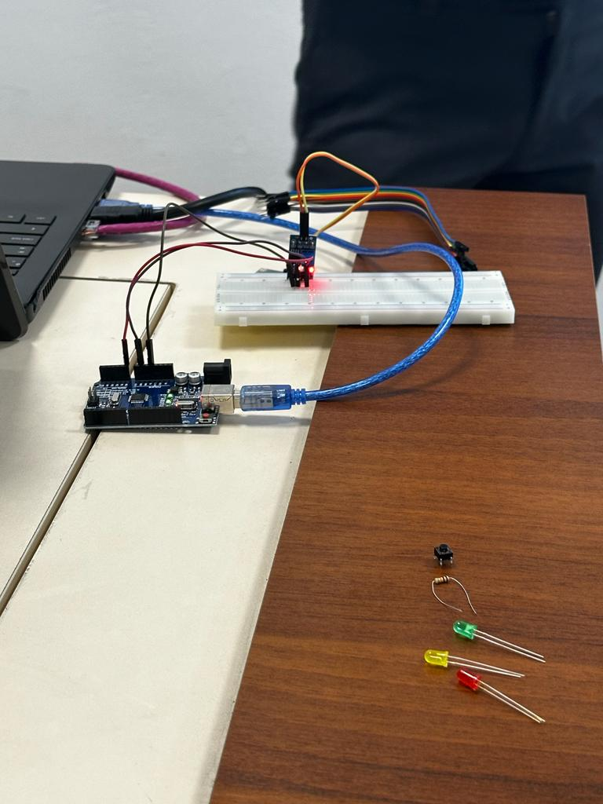

Sadly i couldn't attend this myself since i broke one of my teeth right before the class and had to go fix it, (very good timing) but i managed to ask my classmates for the events that happened, i also borrowed the photos from that day to use here,
there was an experiment about a simple traffic light made with JUMPER CABLES/WIRES, LEDS(RED, YELLOW,GREEN), BREADBOARD, USB CABLE
RESISTORS, ARDUINO UNO, that was shown in the seminar:
Another experiment was a button that would turn some LEDs on if pressed, we used, ARDUINO UNO, LED, BREADBOARD, BUTTON, USB CABLE
Next we will talk about coding in Arduino, to make the Chipset actually interact with the rest of our design we should create a code for it, this programming language is based on C++ and has two function, one at startup and another one that loops over and over, arduino boards come with their own IDE made by Arduino
there was also a water sensor that we made using ARDUINO UNO, BREADBOARD, RESSISTORS, USB CABLE, WATER SENSOR
Eventho i couldn't attend this seminar due to my prior experiences with Arduino i completley understand it's importance in IOT, we already have things per say, just not smart enough to connect to the internet, it's a very thin line between robotics, smart appliences and IOT, however we must remember the main goal of IOT is automating things around us by the power of internet, which is a really smart idea, you already have your phone why carry around keys, remotes, and other things?
Arduino itself is one of the many best chipboards you can use for any IOT application, alongside it is a more heavier duty Raspberry Pi (personal favorite btw!)
I see this seminar as a great way for someone who has no prior experience with IOT to get started with mini computers and IOT, however we didn't get into too much detail about any of the topics from what i heard and that is understadable, IOT is a very very vast field, you could have years worth of knowledge and still learn something new the next day about it, i am very thankful that we got the chance to experience this course as a new approach to tech as suppoused to older more settled methods that we all know by studying computers, it's not all programming and solving problems, sometimes we need a little creativity to help us, humans, to have an easier life! that is why we should try to understand IOT, it serves to make things better for everyone
i couldn't personally meet the guest sadly, however, information presented is very important if you're just starting out!
i have had two prior experiences with the same platforms, once for making a robot that follows a line in highschool (very fun project you should try!) and once more for a social experiment using raspberry Pi to see which phones students use in our campus.
that brings us to the end of this part!
created with
Website Builder Software .